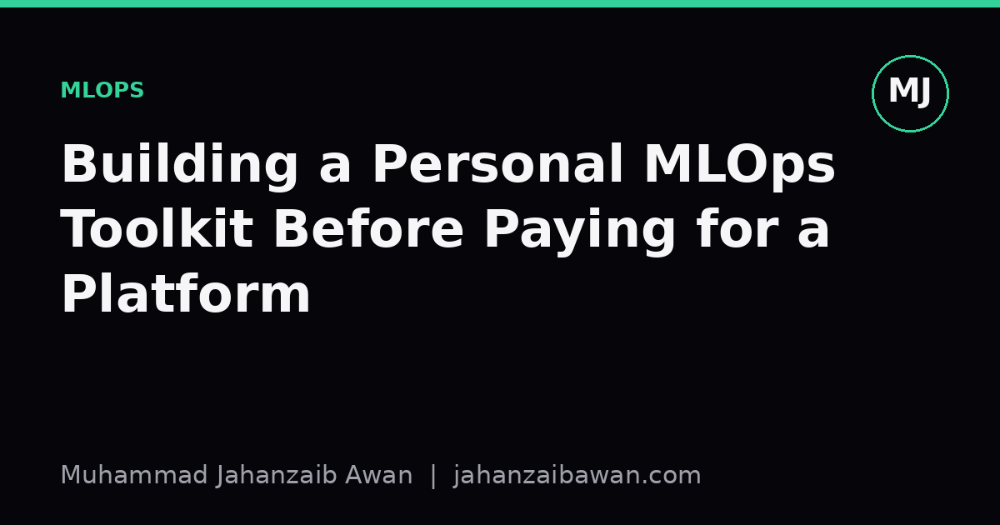

Building a Personal MLOps Toolkit Before Paying for a Platform
Before you subscribe to a managed MLOps platform, it is worth assembling the small set of habits and free tools that solve most of the same problems yourself.

Why this matters before you spend anything
Every managed MLOps platform sells the same promise: track your experiments, version your data, deploy your models, monitor drift, and never lose reproducibility again. These are real problems. I have lost hours trying to work out which checkpoint produced which number in a report, and it is a miserable feeling. But the fix for most of that pain is not a subscription, it is discipline plus a handful of free, well-understood tools stitched together deliberately.
The danger of reaching for a platform too early is that it hides the underlying problem rather than teaching you to solve it. If you do not understand why your experiments become untraceable, buying a dashboard will just give you a prettier untraceable mess. Building a personal toolkit first forces you to name the actual failure modes: unlogged hyperparameters, silent data leakage, models that cannot be recreated, and metrics that quietly drift between runs. Once you have felt those failures and fixed them by hand, you know exactly what you are buying later, if you ever need to buy anything at all.
There is also a cost argument that is easy to underestimate. Many platforms charge per seat, per compute hour, or per logged run, and those costs scale awkwardly for a solo researcher or small team still working out their problem. A toolkit built from open tools costs time upfront and almost nothing to run, which matters enormously when you are iterating on ideas rather than serving production traffic.
The four problems worth solving yourself first
I think of a personal MLOps setup as answering four questions, in this order of priority: can I reproduce this exact result, can I find this exact result later, did my evaluation leak information it should not have, and will I notice if the model's behaviour changes after deployment. Each has a lightweight answer.
Reproducibility starts with pinning everything: library versions, random seeds, and the exact data snapshot used. A requirements file with pinned versions and a fixed seed passed explicitly into your training script costs almost nothing and prevents the classic problem where a model trained today cannot be recreated in three months because a dependency changed its default behaviour. Data versioning can be as simple as hashing your dataset file and recording that hash alongside the run, or using a lightweight tool that tracks data alongside code without needing a server.
Findability is where an experiment tracker earns its keep, but you do not need a paid one. A single structured log, even a spreadsheet or a local database, that records the run identifier, the git commit hash, the hyperparameters, the metrics, and a short note on what you changed, will answer ninety percent of the questions you will ask yourself in six months. The discipline matters more than the tool: I have seen expensive tracking platforms sit unused because nobody enforced logging every run, and I have seen a plain CSV file work perfectly because the habit was consistent.
Leakage checking is less about tooling and more about a checklist you run before trusting any number: was the test set touched during feature engineering, does the split respect time order if the data is temporal, are duplicate records split across train and test. A short script that checks for overlapping identifiers between splits catches a surprising number of real mistakes, and it costs an afternoon to write once and reuse forever.

A worked example: tracking runs without a platform
Suppose I am tuning a gradient boosted model and I run forty experiments over two weeks, varying learning rate, tree depth, and the feature set. Without any structure, I would end up with forty notebook cells and a vague memory of which one scored best. Instead, each run writes a single row to a local file: run id, git commit hash, timestamp, learning rate, max depth, feature set name, validation AUC, and a one-line note.
After two weeks that file has forty rows. I sort by validation AUC and see the top score is 0.812 with a learning rate of 0.05, depth of six, and the extended feature set. But I also notice, because I logged the git commit, that this run used a version of the preprocessing code from before I fixed a bug that leaked a target-derived feature. I can immediately discard that run rather than presenting a number I cannot trust. Without the log, I would have had no way to connect that specific score to that specific bug, and I might have reported 0.812 as my best honest result.
This is the entire value proposition of experiment tracking in miniature: not fancy dashboards, but the ability to answer, with certainty, which code and data produced which number. A platform automates the logging and gives you a nicer interface to query it, but the core mechanism, a structured record tied to a code version, is something you can build in an afternoon with a text file and a bit of scripting discipline.
The same logic extends to model versioning and monitoring. Saving a model file alongside the exact commit hash and data hash that produced it means you can always regenerate it. A simple scheduled script that recomputes a handful of summary statistics on incoming data and flags large deviations from training-time statistics gives you a basic drift alarm without any monitoring subscription. None of this is glamorous, but all of it is the actual substance that platforms wrap in a user interface.
When to actually pay for a platform
None of this is an argument against managed platforms forever. They earn their cost when you have multiple people who need a shared view of experiments, when compute orchestration across many machines becomes genuinely painful to script yourself, or when regulatory requirements demand audit trails that are expensive to build and maintain correctly by hand. At that point, paying for infrastructure that has already solved concurrency, access control, and scale is usually cheaper than doing it yourself.
But even then, having built your own toolkit first means you evaluate platforms with real criteria rather than marketing claims. You know exactly what a good experiment log needs to contain, so you can check whether the platform actually captures it. You know what a leakage check looks like, so you can tell whether the platform's automated data validation is superficial or genuinely useful. The habits transfer even when the tools change.
My practical takeaway is this: before you subscribe to anything, spend a week building the smallest possible version of each piece, a pinned environment, a structured run log tied to git commits, a leakage checklist script, and a basic drift check. It will cost you a few evenings, and it will make every future tool, paid or free, something you understand rather than something you merely operate.